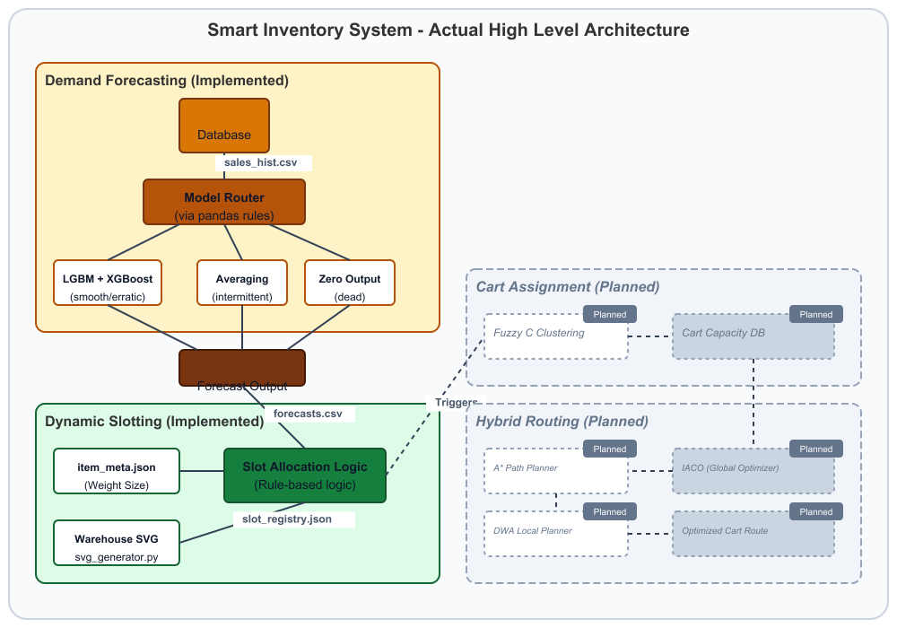
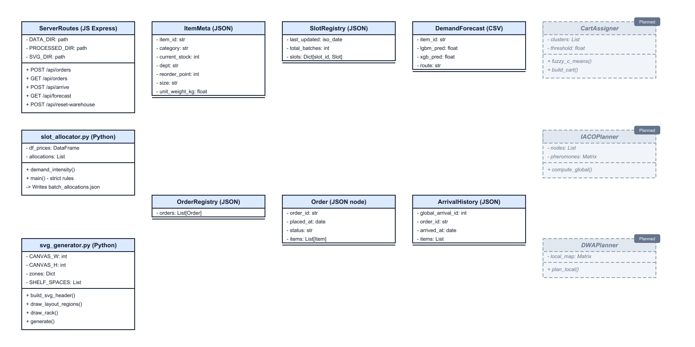
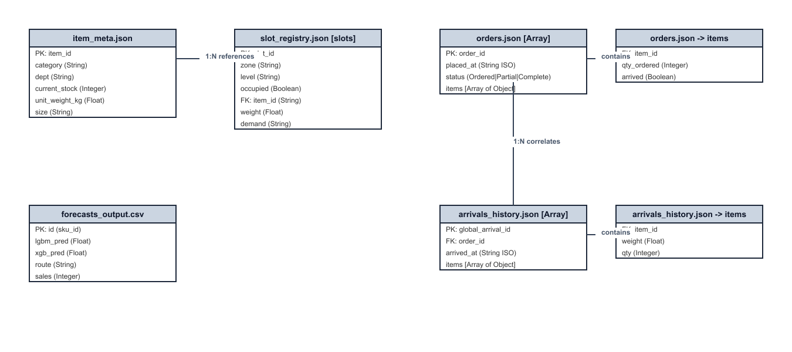
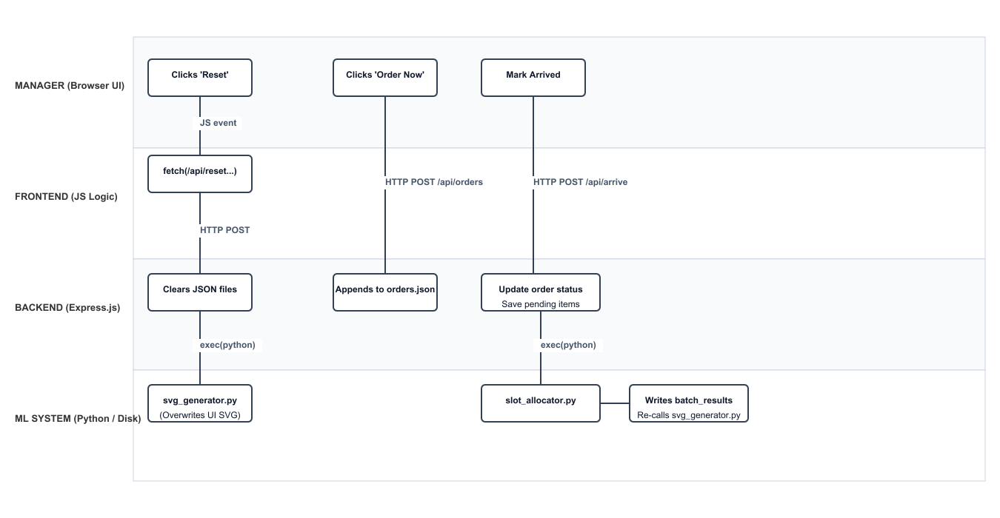
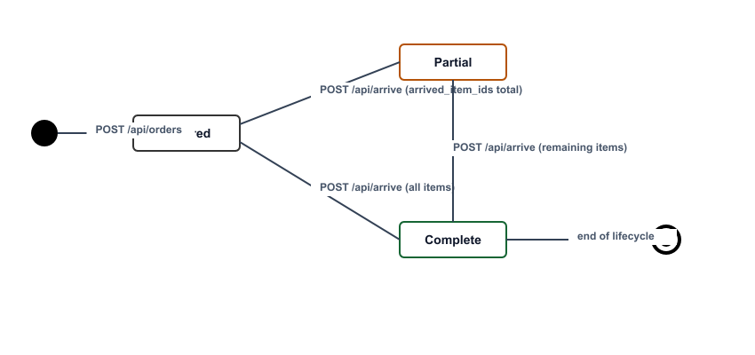
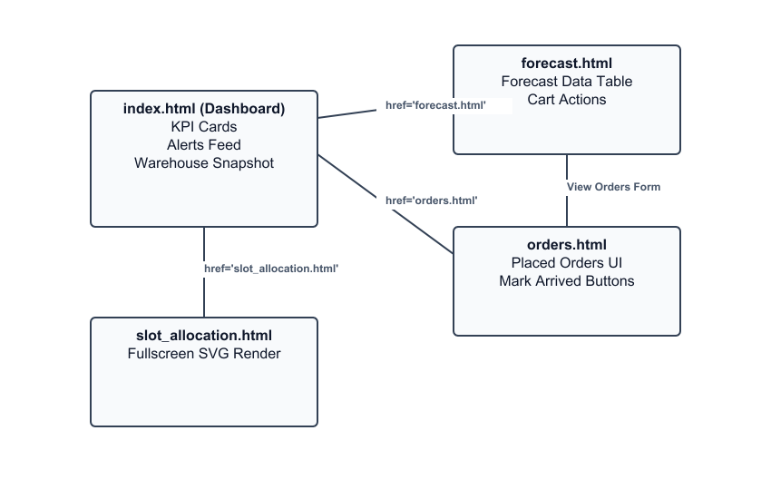
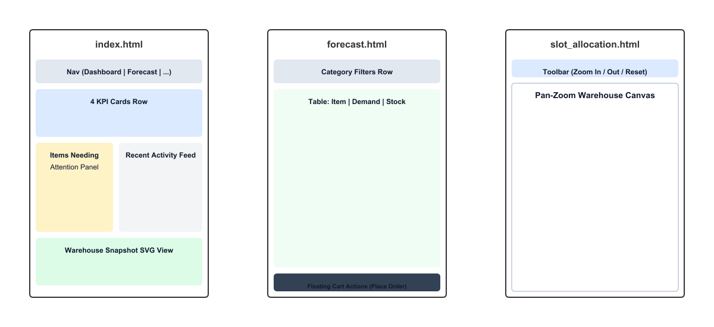
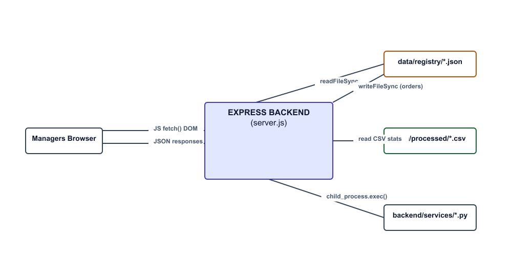
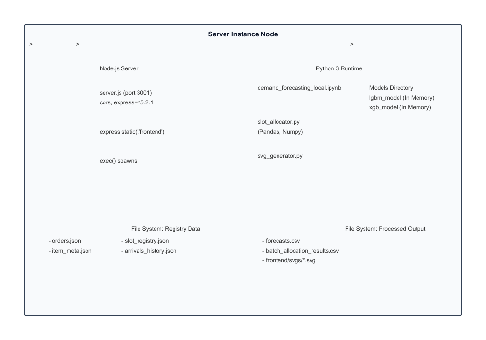

Shows the complete system pipeline from Demand Forecasting down to Slot Allocation (implemented) and Cart Routing (planned).

Internal software structural model detailing Express API routes, Python data generators, and JSON object layouts.

Database schema tracking Orders, Arrivals, Item Meta, and Slot mappings natively mapped to the real JSON datasets.

Step-by-step cross-functional flow mapping user web interactions through Node.js Express APIs into standalone Python worker processes.

Order lifecycle tracking item fulfillments, demonstrating Order -> Partial -> Complete progression limits.

Navigational site-map linking Dashboard KPIs, Forecast logs, and Warehouse Canvas screens.

Structured UI wireframes matching the actual HTML frontend sections across index, forecast, and slot screens.

System-level integration pathways showing local storage JSONs and REST API boundaries utilized by standard browser clients.

Execution layout showcasing the Node.js application wrapping multiple Python execution spaces and memory-resident LGBM/XGBoost structures.
